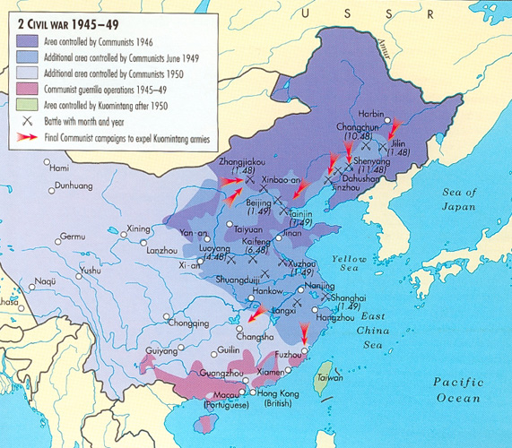
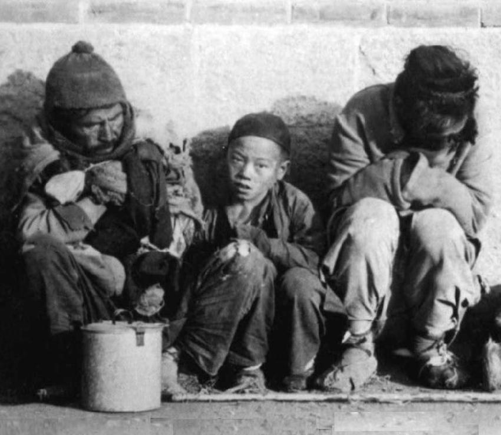
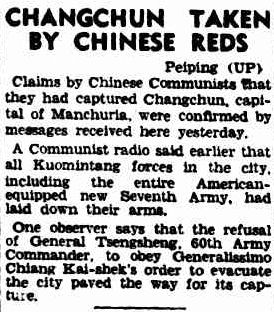

Razboiul este împartit în general în doua faze cu un interludiu: prima din august 1927 pana în 1937,unde alianta KMT CPC s-a prabusit in timpul expeditiei de nord, iar nationalistii au ajuns sa controleze cea mai mare parte a Chinei.
Din 1937 pana în 1945, ostilitatile au fost puse în asteptare, iar cel de-al doilea Front Unit(asa se numea) a luptat împotriva invaziei japoneze a Chinei cu ajutorul eventual al Aliatilor in timpul celui de-al doilea razboi mondial. Razboiul civil a reluat odata cu infrangerea japoniei, iar CPC a castigat mana superioara în faza finala a razboiului din 1945-1949, denumita în general Revolutia Comunista Chineza.
Cauza pierderii razboiului de catre natinalisti a stat la baza strucurii interne instabile a kuomitangului dupa razboiul cu Japonia,ce a dus la o armata slabita,un guvern corupt si cu o populatie flamanda,fapt ce le-a scazut drastic popularitatea,iar multi au gasit comunismul ca o alternativa mai buna.
| Lideri nationalisti | Lideri comunisti |
|---|---|
 Chiang Kai-Shek:Liderul nationalistilor |
 Mao Zedong:Liderul comnunistilor |
 Li Zongren:Liderul clanului Kwei |
 Lin Biao:Vicepresedintele partidului comunist |
 Ma Bufang:Liderul clanului Tsing Ma |
 Zhu De:Maresal al armatei populare de eliberare |
 Long Yun:Liderul clanului Yunnan |
 Peng Denhuai:Ministrul Apararii |
 Yan Xishan:Liderul clanului Jin |
 Deng XiaopingArhitectul Chinei Moderne |
 Ma Hushan:Comandantul Armatei Islamice |
 Zhou Enlai:Prim Ministru |

China in 1945-1949

Conferinta din 1945 dintre Chiang si Mao alaturi de diplomatul american Patrik Hurlei

Chinezi flamanzi in timpul razboiului

Presa legata de cucerirea orasului Changchun(nordul chinei) de catre comunisti